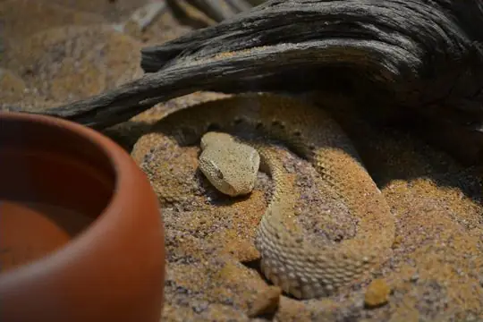
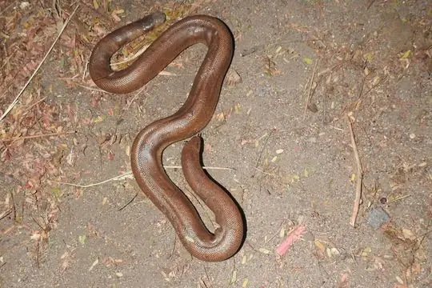
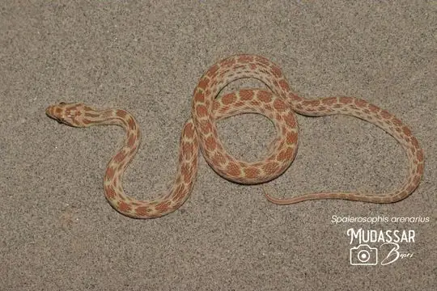

Snakes of Afghanistan
33 snake species are recorded in Afghanistan in SnakeList: 13 venomous and 20 non-venomous, from 6 families.
- 33species
- 13venomous
- 20non-venomous
- 6families
Species
Showing 33 species

Asian sand viperEristicophis macmahoni Barred Wolf SnakeLycodon striatus
Barred Wolf SnakeLycodon striatus- No photo yetBraid SnakePlatyceps ladacensis
 Caucasian pitviperGloydius caucasicus
Caucasian pitviperGloydius caucasicus Central Asian CobraNaja oxiana
Central Asian CobraNaja oxiana Central Asian Sand BoaEryx elegans
Central Asian Sand BoaEryx elegans Chequered KeelbackFowlea piscator
Chequered KeelbackFowlea piscator Common Cat SnakeBoiga trigonata
Common Cat SnakeBoiga trigonata Common KraitBungarus caeruleus
Common KraitBungarus caeruleus Dark-headed Dwarf Racer (persicus)Eirenis persicus
Dark-headed Dwarf Racer (persicus)Eirenis persicus Derafshi SnakeLytorhynchus ridgewayi
Derafshi SnakeLytorhynchus ridgewayi Diadem SnakeSpalerosophis diadema
Diadem SnakeSpalerosophis diadema Dione SnakeElaphe dione
Dione SnakeElaphe dione Dwarf Sand BoaEryx miliaris
Dwarf Sand BoaEryx miliaris Forskal Sand SnakePsammophis schokari
Forskal Sand SnakePsammophis schokari Glossy-bellied RacerPlatyceps ventromaculatus
Glossy-bellied RacerPlatyceps ventromaculatus Halys Pit ViperGloydius halys
Halys Pit ViperGloydius halys Indian CobraNaja naja
Indian CobraNaja naja Indian Desert Tiger SnakeTelescopus rhinopoma
Indian Desert Tiger SnakeTelescopus rhinopoma Leith's Sand SnakePsammophis leithii
Leith's Sand SnakePsammophis leithii Levantine ViperMacrovipera lebetinus
Levantine ViperMacrovipera lebetinus Loos SnakeOligodon taeniolatus
Loos SnakeOligodon taeniolatus Maynard's Longnose Sand SnakeLytorhynchus maynardi
Maynard's Longnose Sand SnakeLytorhynchus maynardi Oriental RatsnakePtyas mucosa
Oriental RatsnakePtyas mucosa Persian Horned ViperPseudocerastes persicus
Persian Horned ViperPseudocerastes persicus
Red Sand BoaEryx johnii
Red-spotted Diadem SnakeSpalerosophis arenarius Saw-scaled ViperEchis carinatus
Saw-scaled ViperEchis carinatus Sindh Thread SnakeMyriopholis blanfordi
Sindh Thread SnakeMyriopholis blanfordi Spotted Desert RacerPlatyceps karelini
Spotted Desert RacerPlatyceps karelini Spotted Whip SnakeHemorrhois ravergieri
Spotted Whip SnakeHemorrhois ravergieri Steppe Ribbon RacerPsammophis lineolatus
Steppe Ribbon RacerPsammophis lineolatus Wadi RacerPlatyceps rhodorachis
Wadi RacerPlatyceps rhodorachis
No snakes in Afghanistan match.
Afghanistan’s snakes in numbers
- Families: Colubridae 17, Viperidae 6, Boidae 3, Elapidae 3, Psammophiidae 3, Leptotyphlopidae 1.